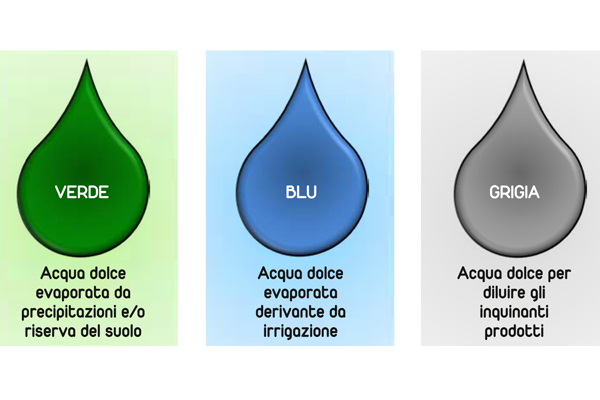

Determinazione e Riduzione dell'Impatto Idrico Globale
1. Introduzione: Che cos'è l'Impronta Idrica?
L'impronta idrica è un indicatore multidimensionale che calcola il volume totale di acqua dolce consumata, evaporata o inquinata per realizzare i beni e i servizi utilizzati quotidianamente. Questo parametro permette di quantificare l'impatto antropico sulle riserve idriche del pianeta attraverso tre componenti fondamentali:
La scomposizione scientifica dell'indicatore si articola in tre flussi principali:
Acqua Blu: Risorse superficiali e sotterranee prelevate per scopi agricoli, civili e industriali.
Acqua Verde: Volume di acqua piovana stoccata nel suolo e traspirata dalle colture vegetali.
Acqua Grigia: Volume idrico teorico richiesto per diluire gli inquinanti oltre gli standard di qualità.

2. Tappa 1: Il Calcolo dell'Acqua Virtuale Nascosta
Per computare correttamente il nostro impatto reale non basta considerare i consumi diretti del rubinetto. È fondamentale mappare l'acqua "invisibile" integrata nelle filiere di produzione dei beni industriali e dei regimi alimentari quotidiani.
Esempi di Volume Idrico Virtuale Incorporato
Produzione di Jeans: Un singolo paio di pantaloni in cotone richiede circa 8.000 litri totali.
Carne di Manzo: Un chilo di carne bovina esige un'impronta estensiva di circa 15.000 litri.
Consumi Diretti: Quote idriche misurabili derivate dall'igiene personale e dall'uso domestico.
Consumi Indiretti: Somma dei flussi idrici virtuali legati agli acquisti e all'alimentazione.
Il Bilancio del Sondaggio in Classe: Sotto la guida della nostra professoressa, abbiamo effettuato un calcolo individuale dell'impronta idrica per elaborare una statistica e una media complessiva del nostro gruppo classe. Dall'analisi dei dati è emerso che, sebbene la maggior parte degli alunni mantenga consumi equilibrati e privi di sprechi sistematici, si evidenziano alcune eccezioni con medie di consumo decisamente elevate. Questo squilibrio locale evidenzia la necessità di attuare interventi correttivi mirati per ottimizzare i volumi della contabilità idrica interna di ciascuno.

3. Tappa 2: Strategie Pratiche per la Riduzione dell'Impatto
La contrazione della nostra impronta idrica richiede una ristrutturazione consapevole delle abitudini quotidiane e dei modelli di consumo. Intervenire sulla domanda di beni ad alta intensità idrica rappresenta la via più rapida per tutelare le riserve naturali.
Le tre macro-azioni consigliate per il risparmio idrico globale sono:
Riforma Alimentare: Incrementare il consumo di vegetali riducendo la domanda di proteine animali.
Consumo Circolare: Contrastare lo spreco di cibo e pianificare acquisti di abbigliamento sostenibili.
Efficienza Domestica: Installare riduttori di flusso e sciacquoni a doppia volumetria sui sanitari.
Nota tecnica: Ridurre l'acquisto di beni superflui agisce direttamente sul risparmio di acqua verde e blu dei paesi esportatori.